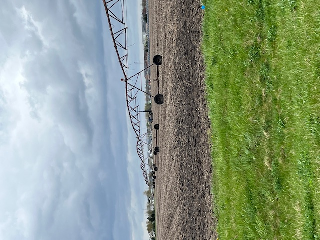
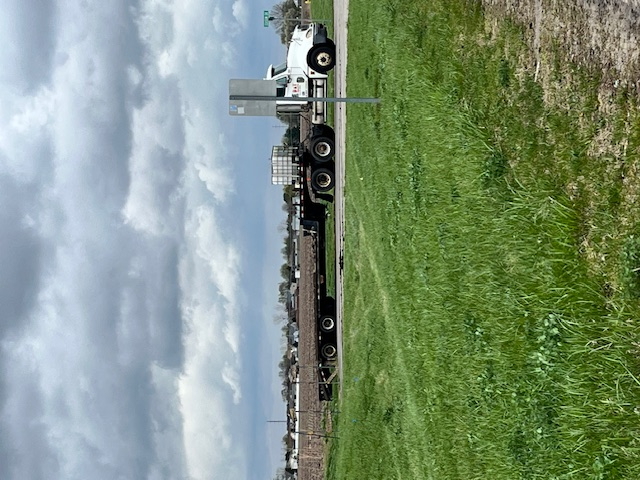
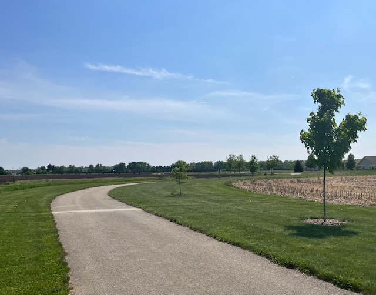
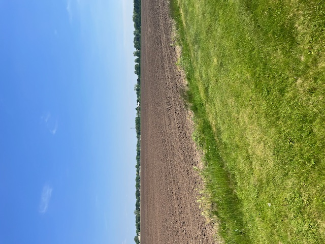
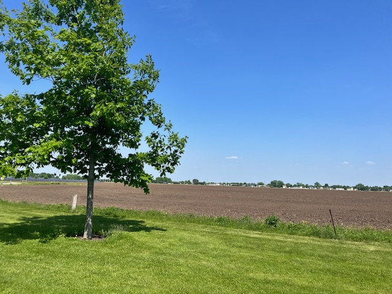
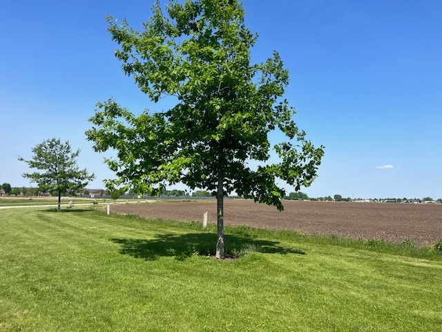

Every great community starts somewhere. This is where ours began — open land, big vision, and the belief that something extraordinary was possible.
See the StoryWhat you see here isn't polished photography. These are the real, unfiltered moments from the earliest days of Cherry Creek — when the only thing we had was land, a plan, and a deep conviction that people deserve better neighborhoods.
These photos tell the story of how Blue Diamond Communities came to be: field by field, path by path, tree by tree.
"The best communities don't appear overnight. They're cultivated — like the land they're built on."
These candid photos capture the raw, real moments of development — unscripted and unfiltered. This is the ground-level truth of building something meaningful.

Before any path was paved or any foundation poured, this was a field. Rich, flat, full of potential. Where others saw farmland, we saw the future home of a community — and we made the decision to build something here that had never been built before.

The machinery arrives. The vision moves from plans and conversations to something you can touch, hear, and see. This is the moment when commitment becomes concrete — when you stop imagining a community and start building one.

A curved path appears through fresh green grass. Young trees take their places. This is one of the most meaningful moments in development — the first walkway of a community that will one day be someone's daily route, morning walk, and place of belonging. It begins with a single path.

Wide open sky. Manicured green edge meeting open earth. This is Cherry Creek's land at its most honest — acres of possibility being shaped intentionally, one decision at a time. Every square foot will serve someone's life well.

A single tree stands in green grass against a deep blue sky — young, planted with purpose, already full of leaves. This is one of the most powerful images from our journey. A community is a living thing. It starts small, it grows, and one day it provides shade for generations that come after you.

Two trees now. Green grass stretching out toward the horizon. A path curves gently away. This is Cherry Creek's promise in its simplest form — that with time, intention, and care, something remarkable grows here. We're just getting started, and the best chapters haven't been written yet.
Six honest photos from the earliest days of Cherry Creek. No filters. No staging. Just a vision and the land to build it on.
Cherry Creek is Blue Diamond Communities' first development — and its most important one. Every tree planted, every path poured, every decision made here shapes what comes next. We're building not just a neighborhood, but proof that a better way of living together is possible.
See the Vision →